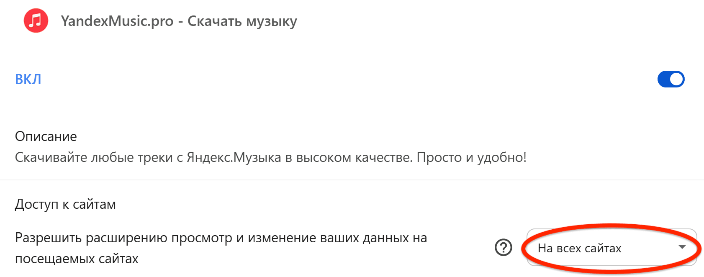

Google Chrome Extension
Внимание! Произошла ошибка!
Google Chrome заблокировал доступ расширения к необходимым сайтам. Без этого скачивание музыки из Яндекс.Музыки работать не будет.
Для корректной работы расширения необходимо разрешить доступ к сайтам.
Как исправить
Выберите опцию доступа ко всем сайтам, как показано на изображении ниже.

Нужна помощь?
support@yandexmusic.pro